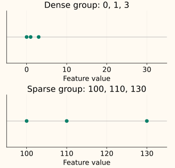

Local Outlier Factor
A point in a sparse region is not necessarily unusual if its neighbors are equally sparse. Local Outlier Factor (LOF) asks whether a point is substantially less densely surrounded than its own neighbors. This lets it compare local patterns rather than impose one global distance cutoff.
The chapter builds that comparison on four one-dimensional points. We will define each intermediate quantity before using it, then connect the calculation to scikit-learn’s training and novelty-detection interfaces.
Compare a neighborhood with itself

Multiplying every distance within an isolated group by ten divides its local densities by ten. Ratios between those densities stay the same. The sparse group therefore need not receive larger LOF values just because its absolute distances are larger.
Start with distances to two neighbors
For the worked calculation, use [0, 1, 3, 10] and choose $k=2$ neighbors, excluding the point itself. Write $N_k(p)$ for point $p$’s neighborhood and $d_k(p)$ for the distance to its kth nearest neighbor. Ordinary distance here is $d(p,o)=|p-o|$.
| Point p | Two nearest neighbors | Radius d₂(p) |
|---|---|---|
| 0 | 1, 3 | 3 |
| 1 | 0, 3 | 2 |
| 3 | 1, 0 | 3 |
| 10 | 3, 1 | 9 |
The radius tells us how far we travel to include the second neighbor. It does not by itself compare a point’s surroundings with its neighbors’ surroundings.
Use the neighbor’s radius to stabilize distance
Very close pairs can make a density estimate excessively large. LOF prevents a distance to neighbor $o$ from becoming smaller than that neighbor’s own radius $d_k(o)$. The resulting reachability distance from $p$ toward $o$ is
The radius belongs to the neighbor $o$. For 0 toward 1, the actual distance is 1 and the neighbor’s radius is 2, so reachability distance is 2. For 1 toward 0, it is max(1, 3) = 3. This quantity can be asymmetric even though ordinary distance is symmetric.
For point 10, the reachability distances to its neighbors 3 and 1 are max(7, 3) = 7 and max(9, 2) = 9. Here neither actual distance needs to be raised.
Turn average reachability into a density measure
The local reachability density, written $\operatorname{lrd}_k(p)$, is the reciprocal of the average reachability distance to the neighborhood. The notation $|N_k(p)|$ means the number of neighbors:
Smaller average reachability gives larger density. This is a local density measure in inverse-distance units, not a probability density fitted over the whole feature space.
| Point | Reachability distances | Local density |
|---|---|---|
| 0 | 2, 3 | 1 / 2.5 = 0.4 |
| 1 | 3, 3 | 1 / 3 ≈ 0.3333 |
| 3 | 2, 3 | 1 / 2.5 = 0.4 |
| 10 | 7, 9 | 1 / 8 = 0.125 |
Compare the neighbors’ densities with the point’s density
Finally, average each neighbor’s density divided by the point’s own density. That ratio is the local outlier factor:
For point 10, the neighbors’ average density is $(0.4+1/3)/2\approx0.3667$. Dividing by its own density, 0.125, gives LOF ≈ 2.9333. Its neighbors are nearly three times as dense by this measure.
A score near 1 means comparable local densities. A score substantially above 1 indicates a locally sparse point; a score below 1 is possible when the point is denser than its neighbors. LOF is a relative score, not a probability that a row is erroneous.
Point 10 uses neighbors 3 and 1.
| Neighbor o | Distance | Neighbor’s radius | Reach |
|---|---|---|---|
| 3 | 7 | 3 | 7 |
| 1 | 9 | 2 | 9 |
Neighborhood size and ties are part of the definition
The choice of $k$ sets the comparison scale. Very small neighborhoods can be unstable; larger ones can cross between populations that should be compared separately. A compact group of abnormal observations can look locally ordinary when its members mainly use one another as neighbors.
In multiple dimensions, the distance metric and feature scales decide who becomes a neighbor. Use meaningful features and a fitted scaling policy, then inspect the resulting neighborhoods. Try several plausible values of $k$ and check whether the suspicious cases remain stable.
Original-paper ties versus fixed-k implementations
The paper includes all points tied at the kth-neighbor distance, so $|N_k(p)|$ can exceed $k$. Scikit-learn selects a fixed number of neighbors. Our worked data has no boundary ties, so that distinction does not affect its results.
The C++ example below also selects exactly $k$ neighbors, breaking equal-distance ties by input index. It rejects zero total reachability. With duplicate points, an unregularized density can otherwise be infinite; scikit-learn adds a small numerical stabilizer. Do not expect every tie-heavy dataset to reproduce the paper and every implementation identically.
Use the right interface for the observations being scored
For detecting outliers within the data supplied for fitting, use fit_predict. The attribute negative_outlier_factor_ stores the negative of the training LOF scores, so more negative values are more unusual.
Python: score the four training points
import numpy as np
from sklearn.neighbors import LocalOutlierFactor
x = np.array([[0.], [1.], [3.], [10.]])
detector = LocalOutlierFactor(n_neighbors=2)
labels = detector.fit_predict(x)
print((-detector.negative_outlier_factor_).round(4).tolist())
print(labels.tolist())
[0.9167, 1.2, 0.9167, 2.9333]
[1, 1, 1, -1]For future observations against a fitted reference, set novelty=True before fitting. Here the reference has only [0, 1, 3], and the two new observations are 2 and 10:
Python: fit a reference for future data
reference = np.array([[0.], [1.], [3.]])
future = np.array([[2.], [10.]])
novelty = LocalOutlierFactor(n_neighbors=2, novelty=True).fit(reference)
print((-novelty.score_samples(future)).round(4).tolist())
print(novelty.predict(future).tolist())
[0.9167, 2.9333]
[1, -1]Future queries use the fixed training neighbors and densities; they do not become one another’s reference. Calling these novelty methods on training rows can include a row as its own neighbor and change the score. Use the training-score attribute for those rows instead.
The default automatic offset is −1.5, so these examples flag positive LOF scores above 1.5. A numeric contamination changes the training-score threshold. As with Isolation Forest thresholds, that setting is a labeling convention, not a discovered error rate.
C++: compute the fixed-k training scores
This transparent one-dimensional implementation performs all neighbor searches directly. It is for small examples: sorting distances for every point costs roughly $O(n^2\log n)$ time, where $n$ is the number of observations.
Compile the three-stage LOF calculation
#include <algorithm>
#include <cmath>
#include <iomanip>
#include <iostream>
#include <stdexcept>
#include <utility>
#include <vector>
std::vector<double> lof(const std::vector<double>& x, std::size_t k) {
const std::size_t n = x.size();
if (k == 0 || k >= n) throw std::invalid_argument("need 1 <= k < n");
for (double v : x)
if (!std::isfinite(v)) throw std::invalid_argument("finite values required");
std::vector<std::vector<std::size_t>> neighbors(n);
std::vector<double> radius(n), density(n), result(n);
for (std::size_t i = 0; i < n; ++i) {
std::vector<std::pair<double, std::size_t>> distances;
for (std::size_t j = 0; j < n; ++j) if (i != j) {
const double d = std::abs(x[i] - x[j]);
if (!std::isfinite(d)) throw std::overflow_error("distance overflow");
distances.push_back({d, j});
}
std::sort(distances.begin(), distances.end());
radius[i] = distances[k - 1].first;
for (std::size_t j = 0; j < k; ++j)
neighbors[i].push_back(distances[j].second);
}
for (std::size_t i = 0; i < n; ++i) {
double total = 0;
for (auto j : neighbors[i])
total += std::max(std::abs(x[i] - x[j]), radius[j]);
if (!(total > 0) || !std::isfinite(total))
throw std::domain_error("reachability sum is zero or not representable");
density[i] = k / total;
if (!std::isfinite(density[i]))
throw std::overflow_error("density overflow");
}
for (std::size_t i = 0; i < n; ++i) {
for (auto j : neighbors[i]) result[i] += density[j] / density[i];
result[i] /= k;
if (!std::isfinite(result[i]))
throw std::overflow_error("density ratio overflow");
}
return result;
}
int main() {
std::cout << std::fixed << std::setprecision(4);
for (double value : lof({0,1,3,10}, 2)) std::cout << value << "\n";
}
0.9167
1.2000
0.9167
2.9333Keep the score, neighborhood and original row available for inspection. The treatment chapter explains how to decide what happens after a flag and evaluate that choice on the intended workload.
References and further reading
- Breunig et al.: LOF—Identifying Density-Based Local Outliers — the original reachability, local density and LOF definitions in Section 4.
- Scikit-learn: LocalOutlierFactor — training scores, novelty methods, neighbor settings and threshold conventions.
- Scikit-learn: local outlier factor guide — the distinction between scoring training observations and unseen queries.